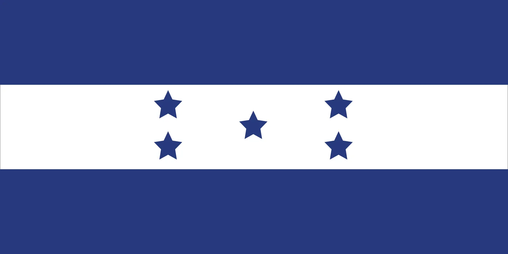
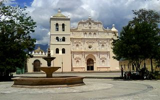
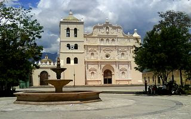

Honduras

Honduras, oficialmente conocida como la República de Honduras, es un país ubicado en América Central. Tiene una superficie de aproximadamente 112,492 kilómetros cuadrados, lo que lo convierte en uno de los países más grandes de la región. Su nombre proviene del español y significa "Profundidades", en referencia a la profundidad de sus costas. Honduras se destaca por su rica biodiversidad, con vastas selvas tropicales, montañas, y costas caribeñas, así como por su herencia cultural que refleja una mezcla de influencias indígenas, africanas y europeas.
Honduras está situado en el corazón de América Central, limitado al norte y este por el Mar Caribe, al sur por Nicaragua, al suroeste por El Salvador, y al oeste por Guatemala. Su capital es Tegucigalpa, la cual es también el centro político, cultural y económico del país. Honduras posee un clima tropical en sus costas y un clima templado en las tierras altas. Las estaciones se dividen en una temporada seca (de noviembre a abril) y una temporada lluviosa (de mayo a octubre).
Honduras tiene una población aproximada de 9.5 millones de habitantes. La mayoría de la población es mestiza, con raíces indígenas y europeas, y existe una significativa comunidad afrodescendiente, especialmente en la región costera del Caribe. El español es el idioma oficial, aunque algunas comunidades indígenas conservan sus lenguas tradicionales. La religión predominante es el cristianismo, con la Iglesia Católica siendo la más representada, seguida por varias denominaciones protestantes.
La economía de Honduras se basa en la agricultura, siendo el café, las bananas y la palma africana los principales productos de exportación. Además, las remesas enviadas por hondureños en el extranjero son una fuente vital de ingresos para muchas familias. En las últimas décadas, el país ha visto un crecimiento en los sectores de manufactura y turismo, aunque enfrenta desafíos significativos, como la pobreza y la desigualdad, que afectan a una gran parte de la población.
 

Honduras tiene una herencia cultural rica y diversa, marcada por sus raíces indígenas, particularmente de las civilizaciones mayas y lencas, y la influencia de la colonización española. Esta mezcla se refleja en las tradiciones y costumbres del país, así como en su música, danza, y artesanía. Las festividades hondureñas incluyen la Feria de San Isidro en La Ceiba, que es uno de los carnavales más grandes de Centroamérica, y la Semana Santa, que es celebrada con gran fervor religioso.
A lo largo de su historia, Honduras ha enfrentado varios desafíos, incluyendo dictaduras militares, inestabilidad política, y conflictos sociales. Sin embargo, el país ha avanzado hacia la consolidación democrática y continúa trabajando en su desarrollo socioeconómico.
Honduras es un destino turístico con mucho potencial, ofreciendo una impresionante diversidad de paisajes, desde sus playas en el Caribe, como las Islas de la Bahía, hasta sus parques nacionales y sitios arqueológicos como las ruinas de Copán. El país es ideal para quienes buscan aventuras al aire libre y contacto con la naturaleza.
La gastronomía hondureña es una fusión de sabores indígenas y españoles. Los platos típicos incluyen la baleada, que es una tortilla de harina rellena de frijoles, queso y crema, y el plato típico, que consiste en carne asada, frijoles, arroz, plátano frito y ensalada.
A pesar de sus riquezas naturales y culturales, Honduras enfrenta importantes desafíos sociales y económicos. La pobreza, la violencia y la desigualdad siguen siendo problemas críticos que requieren atención continua y soluciones sostenibles.